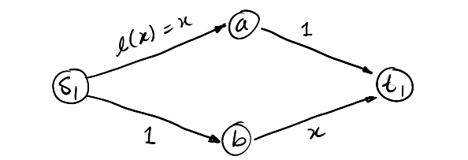
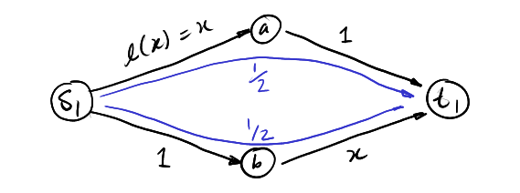
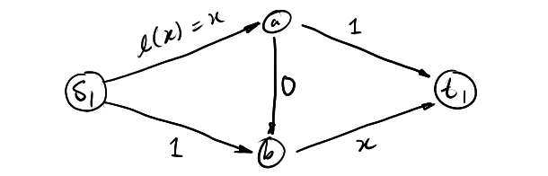
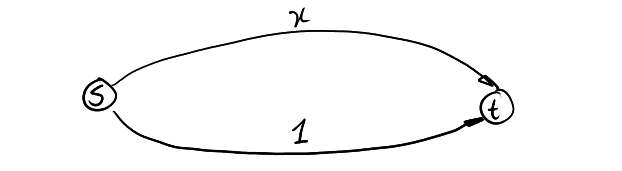

### Introduction
Brief, hopefully very short notes on game theory.
***Thm.*** There are more detailed lecture notes and you should go find them.
Some of this is covered in A level further maths.
1. [Games](#game)
2. [Nash's Theorem](#nash)
2. [Correlated Equilbria](#corr)
3. [Auctions](#mech)
4. [Combinatorial Auctions](#comb)
4. [Selfish Load Balancing](#load)
4. [Selfish Routing](#routing)
### The Tragedy of the Commons
Suppose $n$ people want to send information over a shared channel.
- Each user $i$ sends $x_i \in [0,1]$ through the channel, to maximise their own bandwidth.
- The channel has limited capacity, 1.
- The channel breaks if $\sum_{\forall i} x_i \gt 1$
- Otherwise, the channel linearly decreases in quality, so each user has effective payoff $x_i (1 - \sum_{\forall i} x_i)$.
How do you maximise your send rate? Suppose you are $i$, and the effect caused by other users are $t := \sum_{\forall j \neq i} x_j$, then your benefit is $x_i (1 - t - x_i)$ (need to include own effect).
Maximise this. -> If $t \gt 1$, then there's nothing you can do. But otherwise, the best you can get is by setting $x_i = \frac{1-t}{2}$ (Use A level optimisation techniques).
In general the only stable state in where the channel is not broken is $x_i = \frac{1}{n+1}$. This grants a profit of $ \frac{n} { {n+1}^2} $ total. The tragedy is that if each user chose $x_i = \frac{1}{2n}$, the total profit would have been greater. But this is not a stable solution.
$$
\newcommand{\R}{\mathbb{R}}
\newcommand{\E}{\mathbb{E}}
\newcommand{\bb}{\mathbb}
\newcommand{\rm}{\textrm}
\renewcommand{\vec}{\mathbf}
\newcommand{\lra}{\longrightarrow}
\newcommand{\sopt}{\sigma^\*}
\newcommand{\xopt}{x^\*}
\newcommand{\mixstrat}[1]{ \Delta^{|S_{ #1}|} }
\newcommand{\mixzero}[1]{ \Delta^{m_#1} }
\newcommand{\t}{^\top}
\newcommand{\x}{\vec{x}}
\newcommand{\y}{\vec{y}}
\newcommand{\v}{\vec{v}}
\newcommand{\sr}{^\*}
\DeclareMathOperator{\argmin}{argmin}
\DeclareMathOperator{\argmax}{argmax}
\DeclareMathOperator{\cost}{cost}
\DeclareMathOperator{\nash}{Nash}
\DeclareMathOperator{\opt}{opt}
\DeclareMathOperator{\load}{load}
\DeclareMathOperator{\poa}{PoA}
$$
Games
***Game Vocab.***
- A game has a set of $n$ rational players $[n] = \\{1..n\\}$.
- Each player $i$ has a set of (mostly finite) **strategies** $S_i = \\{s_1..s_n\\}$.
- Each player has a **payoff function** $p_i : S_1 \times S_2 \times \cdots \times S_n \lra \R$
- An outcome is each player selecting a strategy, $(s_1, s_2, \dots, s_n)$ and the payoff that $i$ receives is $p_i(s_1..s_n)$.
- Each game is played once and each player wants to maximise payoff. Players have **complete information**.
### Dominating Strategies
***The Prisoner's Dilemma.***
1\\2 | confess | silence
-|-|-
**confess** | -10/-10 | -1/-25
**silence** | -25/-1 | -2/-2
Note player 1 takes rows and player 2 takes columns. In this game without communication you are always better off by confessing.
Confessing **dominates** staying silent.
***Dominating strategies.*** For two strategies $s,t$, $s$ dominates $t$ if for any fixed action set of other players, the payoff for playing $s$ is **strictly greater** than that of $t$.
***Iterated elimination of dominated strategies*** means iteratively looking for dominated strategies, removing them from the game, and repeating until no more can be found.
If this results in a 1x1, we have found a solution.
The order of elimination doesn't matter here (due to *strict* greatness).
***Weakly Dominating Strategies.*** $s$ weakly dominates $t$ if for any (blah blah blah) the payoff for playing $s$ is **greater or equal to** $t$.
Note that in eliminating weakly dominated strategies, *order matters*.
In fact, by arbitrarily adding states to a game that will be weakly eliminated automatically, we can turn several stable states into just one, thus this is not something to do carelessly.
### Nash Equilibria
***Battle of the Sexes.***
Alice\\Bob | costa | starbucks
-|-|-
**costa** | 3/1 | 0/0
**starbucks** | 0/0 | 1/3
Intuitively there are two stable states. Formally,
***Best Response.*** Suppose each player chooses some strategy. For player $j$, the strategy $s_j$ is a best response to all other players if they get no higher payoff by switching:
$$ p_j (s_1..s_n) \geq \max_{x \in S_j} p_j(s_1..s_{j-1},x,s_{j+1}..s_n) $$
***Pure Nash Equilibrium.*** A PNE of a game is a strategy profile where each players' strategy is a best response of all others.
By noting down best responses for each player, a square where both have best responses is a PNE.
1\\2 | A | B
-|-|-
**1**|1/(6)|3/5
**2**|0/1 | (4)/(6)
**3**|(2)/2 | 2/(3)
(2,B) is the best response.
### Mixed Strategies
***Poisoned Drink.*** Sometimes there are no PNEs. Look at this:
A\\B | own | other
-|-|-
**own** | -1 / 1 | 1 / -1
**other** | 1 / -1 | -1 / 1
We need to find mixed strategies.
***Mixed strategies.*** A mixed strategy of strategy set $S_i$ is a probability distribution of intended plays.
Denote the mixed strategy as an $|S_i|$-dim vector where each entry is a probability for that $s_i$. Let $\mixstrat{i}$ denote the *set of mixed strats* for $i$ -- the **mixed strat. simplex.**
For 2 strategies, this is like a line where the left corresponds to strategy 1 with $p=1$, and the right to strategy 2 with $p=1$. For 3 strategies, a triangle, four a tetrahedron, five... and we'll stop there.
Let $\sigma = (\sigma_1 .. \sigma_n)$ be the **mixed strategy profile** where each player plays a mixed strategy. Let
- $\sigma_{-i}$ mean a profile with $i$ taken out.
- $(\sigma_{-i}, \sigma_i) = \sigma$.
- $p_i(\sigma)$ is of course the payoff.
***Mixed nash equilibrium.*** A MNE $\sigma^*$ is a strategy profile where:
$$\forall i \in [n];\\; \forall \sigma_i \in \mixstrat{i} ; \\; p_i (\sopt_{-i}, \sopt_i) \geq p_i (\sopt_{-i}, \sigma_i) $$
i.e. no player can do better by switching.
***Lemma.*** A strategy profile $\sopt$ is NE $\iff$ for each player $i$ each pure strategy of $i$ is played with probability 0 or as a best response to all other players $\sopt_{-i}$.
$$ \forall i \in [n];\\; \forall s_i \in S_i ;\\; \sopt_i (s_i) = 0 \lor p_i(\sopt_{-i}, s_i) = \max_{s_i' \in S_i} p_i(\sopt_{-i}, s_i') $$
### 2P Zero Sum Games
Where the profit of one player == the loss of another. Usually only payoffs for player 1 are displayed, and can be in matrix form. Consider:
$$
G = \begin{bmatrix}
2 & -23 & -8 & 17 \\\\
3 & 5 & -3 & 7 \\\\
-3 & 2 & 3 & 5 \\\\
-9 & 12 & 1 & -9
\end{bmatrix}
$$
If player 1 plays mixed strat $\vec{a}\t = (0, \frac12, \frac12, 0)$, then for player 2 the *expected payoff* for each column is
$$
\begin{bmatrix}
0 & \frac12 & \frac12 & 0
\end{bmatrix}
\begin{bmatrix}
2 & -23 & -8 & 17 \\\\
3 & 5 & -3 & 7 \\\\
-3 & 2 & 3 & 5 \\\\
-9 & 12 & 1 & -9
\end{bmatrix}
=
\begin{bmatrix}
0 & -\frac72 & 0 & -6
\end{bmatrix}
$$
Similarly if 2 plays $\vec{b}\t = (\frac12, 0 \frac12, 0)$ then player 1 gets
$$
\begin{bmatrix}
2 & -23 & -8 & 17 \\\\
3 & 5 & -3 & 7 \\\\
-3 & 2 & 3 & 5 \\\\
-9 & 12 & 1 & -9
\end{bmatrix}
\begin{bmatrix}
\frac12 \\\\ 0 \\\\ \frac12 \\\\ 0
\end{bmatrix}
=
\begin{bmatrix}
-3 \\\\ 0 \\\\ 0 \\\\ -4
\end{bmatrix}
$$
Note that each probability dist is a best response to the other player. The total payoff is
$$ \vec{a}\t G \vec{b} = 0 $$
-----
We require some awareness of linear programming (exercise left to the reader).
***Thm.*** (strong duality theorem) If the primal or dual of a linear program has an optimal solution of finite value, then so does the other, with the *same* value.
In 0-sum games one strategy is to try maximise your guaranteed payoff. I.e. player 1 chooses a mixed strategy that gives the highest expected payoff assuming player 2 chooses the worst possible option for 1 -- maximin (or minimax).
As an LP problem, this resolves to:
\begin{align}
\max_{\x \in (\Delta^{m_{1}}), v} & v \\\\
\rm{subject to } & \x\t A \geq \begin{bmatrix}
v & \cdots & v
\end{bmatrix}
\end{align}
Where $\x \in \Delta^{m_1}$ means entries of $\x$ are non-negative and sum to 1. I.e. $\x \geq \vec0$ and $\vec1 \t \x = 1$.
We assume all entries in A are non-negative. Enforce this by adding a large value to A of at least the smallest element, which changes the payoffs but *not* the equilibria. Then we can relax to $\vec1 \t \x \geq 1$ and get the linear program:
\begin{align}
\max\\; & \begin{bmatrix}
0 & \cdots & 0 & 1
\end{bmatrix}
\begin{bmatrix}
x_1 \\\\ \vdots \\\\ x_{m_1} \\\\ v
\end{bmatrix} &\\\\
\rm{subject to } & \begin{bmatrix}
& & & 1 \\\\
& -A\t& & \vdots \\\\
&&& 1 \\\\
1 &\cdots & 1 & 0
\end{bmatrix}
\begin{bmatrix}
x_1 \\\\ \vdots \\\\ x_{m_1} \\\\ v
\end{bmatrix} \leq
\begin{bmatrix}
0 \\\\ \vdots\\\\ 0 \\\\ 1
\end{bmatrix} \\\\
& \begin{bmatrix}
x_1 \\\\ \vdots \\\\ x_{m_1} \\\\ v
\end{bmatrix} \geq \vec0
\end{align}
Player 2 maximises their payoff == minimising player 1's payoff:
\begin{align}
\min\\; & \begin{bmatrix}
0 & \cdots & 0 & 1
\end{bmatrix}
\begin{bmatrix}
y_1 \\\\ \vdots \\\\ y_{m_2} \\\\ w
\end{bmatrix} &\\\\
\rm{subject to } & \begin{bmatrix}
& & & 1 \\\\
& -A && \vdots \\\\
&&& 1 \\\\
1 &\cdots & 1 & 0
\end{bmatrix}
\begin{bmatrix}
y_1 \\\\ \vdots \\\\ y_{m_2} \\\\ w
\end{bmatrix} \leq
\begin{bmatrix}
0 \\\\ \vdots\\\\ 0 \\\\ 1
\end{bmatrix} \\\\
& \begin{bmatrix}
y_1 \\\\ \vdots \\\\ y_{m_2} \\\\ w
\end{bmatrix} \geq \vec0
\end{align}
These are **dual** and have the same value.
***Maximin and Minimax.*** A strategy $\x \in \Delta^{m_1}$ is maximin if
$$ \x \in \argmax\_{\x' \in \mixzero 1} \min\_{j \in [m_2]} (A\t \x')\_j $$
A strategyt $y \in \mixzero 2$ is minimax if
$$ y \in \argmin\_{\y' \in \mixzero 2} \max\_{i \in [m_1]} (A\y')\_i $$
This is called a minimax equilibrium.
***Thm.***
- For 2 player zero sum games a pair of maximin and minimax strategies forms a NE.
- All NE have the same expected payoff. The payoff for 1 is the **value** of the game.
- A NE can be computed in poly time ($n = $ pure strats)
Nash's Theorem
### Introduction
Nash equilibria always exist for general games. This section is important.
### Sperner's Lemma
Consider a triangular graph subdivided into smaller triangles. Vertices are coloured and a **valid colouring** follows these rules:
1. All three corners have a unique colour.
2. No points on the opposite edge to a corner can have that colour.
3. Internal points can be any colour.
***Lemma.*** Each valid colouring of the graph will have at least one small triangle with three corners coloured differently (tri-chromatic).
There are an odd number of these.
-----
***Proof 1.*** (The counting argument) WLOG let:
- $\ell$ be the number of tri-chromatic triangles we want this to be odd
- $k$ be the number of red-blue triangles -- triangles without green corners.
We are interested in "red-blue edges" -- edges which have a red and a blue corner. These can be (1) internal, or (2) on the big triangle edge.
(2)-type red blue edges must be entirely opposite the green corner. We claim that the number of these $x$ is odd.
This is because if you take a walk from the red corner to the blue corner, you start and end in a different colour, therefore there must be an *odd* number of switches in colour, hence odd $x$.
(1)-type red blue edges are inside the triangle, there are $y$ many of these.
The total number is then $x + y$.
- Each red-blue triangle must have 2 red-blue edges.
- Each trichromatic triangle has 1 red-blue edge.
- So the total number of red-blue edges is $2k + \ell$.
- So $x + y = 2k + \ell$? Actually, $y$ internal edges are counted *twice*, since two triangles share an edge, and so actually $x + 2y = 2k + \ell$
- $\therefore \ell = 2(y-k) + x$ which is **odd** as $x$ is odd.
$\Box$
-----
***Proof 2.*** (Connecting argument)
- Take the bottom edge. Connect the bottom right corner to all non-adjacent bottom nodes.
- This is a planar graph -- we have a number of faces (including the outside of the graph as a face)
- Place a node in each face (including the outside)
Define a new graph (grey) $:=$ two nodes are connected if two cells share a red-blue edge.
- Each node can have 0, 1, or 2 connections.
- None can have 3 (as we can't have 3 red-blue edges around a triangle).
- So we only have: (1) isolated nodes, (2) simple paths, (3) simple cycles.
- Tri-chromatic triangles must exist at the *ends* of paths.
- Ends come in pairs $\implies$ there are an even number of tri-chromatic triangles, **but** one of these *must* be the outside of the graph.
- Hence there are an **odd** number of tri-chromatic triangles.
$\Box$
-----
### Brouwer's Fixed Point Theorem
***Thm.*** Every continuous function $f:S \lra S$ over a $d$-dimensional simplex has a fixed point. ($\exists x : f(x) = x$)
In more words, $f$ maps points on a simplex to other points on the same simplex. There should be at least one point that maps to itself. It is akin to a continuous version of Sperner's lemma.
-----
***Proof 1.*** (1 dimensional simplex)
WLOG consider interval $[0,1]$, and a function $f:[0,1] \lra [0,1]$. If $f(0) = 0$ or $f(1) = 1$ then that is a fixed point. Thus consider when $f(0) \gt 0$ and $f(1) \lt 1$
Else, consider the function $g(x) = f(x) - x$ which is also continuous. Since $g(0) \gt 0$ and $g(1) \lt 0$, by the **intermediate value theorem** there exists a point $a : g(a) = 0 \implies f(a) = a$ is a fixed point.
$\Box$
-----
***Proof 2.*** (1 dimensional simplex)
Define a colour for each point in the simplex:
- *red* if $f(x) \gt x$;
- *green* if $f(x) \lt x$;
Therefore $f(0) \geq 0$ will be *red*, and $f(1) \leq 1$ will be *green*.
If we subdivide the simplex, just like in Sperner's lemma we can walk from the red to the green end, and must cross an *odd* number of edges. Subdivide until edge length reaches zero, and we have an odd number of switches. Hence at least one fixed point.
$\Box$
-----
***Proof 3.*** (2 dimensional simplex)
We need to use **barycentric coordinates** to talk about a triangle. That is, non-negatives coordinates $(x_1, x_2, x_3)$ where (1,0,0), (0,1,0), (0,0,1) are the coordinates of three corners. I.e. a coordinate is zero at the edge and one at the opposite corner. $x_1 + x_2 + x_3 = 1$.
A point $\x = (x_1, x_2, x_3)$ is mapped to $f(\x) = (y_1, y_2, y_3)$. Colour all points:
- *red* if $x_1 \gt y_1$
- *blue* if $x_1 \leq y_1 \land x_2 \gt y_2$
- *green* if $x_1 \leq y_1 \land x_2 \leq y_2 \land x_3 \gt y_3$
Note that if $f$ has no fixed point, then all points are coloured, but fixed points are left uncoloured.
This construction is actually a *valid colouring* of Sperner's lemma. That is, construct a sperner's lemma, where each node is coloured according to $f$ and the above rule.
Recursively subdivide and colour -- we will still have a valid colouring and tri-chromatic triangles. Repeat until edge length tends to zero, the tri-chromatic triangles will converge to single points -- these are our fixed points.
$\Box$
-----
> The proof for higher dimensions is identical. Brouwer's theorem is true for any convex compact set, not just a simplex.
### Nash's Theorem
***Thm.*** Every game has a nash equilibrium.
-----
***Proof.*** (for two player games)
> General idea: construct a function $f$ where fixed points are nash equilibria.
Let $\x \in \mixzero{1}$ be the strategy of player 1 and $\y \in \mixzero{2}$ be that of player 2. Let $A$ be the payoff matrix for 1 and $B$ for 2.
The payoff for 1 is $\x\t A \y$ and for 2 is $\x\t B \y$. For 1 $A\y$ gives payoffs for each mixed strategy, we denote $(A\y)_i$ as the payoff for strategy $i$. This is the same for 2 and $\x\t B$.
Define function $k_i$ as the improvement for a player switching to a pure strategy $i$ over using their mixed strategy $\x$. For player 1:
$$ k_i(\x, \y) = \max(0, (A\y)_i - \x\t A \y) $$
For player 2:
$$ k_i'(\x, \y) = \max(0, (\x\t B)_i - \x\t B \y) $$
Suppose we find a pure strategy that is better than our current mixed strategy. We want to adjust our mixed strategy to weight this pure strategy higher, by adding $k_i(\x, \y)$ onto the current probability of $x_i$ (and re-weight). That is, define for player 1:
$$ g(\x, \y) = \frac{1}{1 + \sum_{i \in [m_1]} k_i(\x, \y)} \begin{bmatrix}
x_1 + k_1(\x, \y) \\\\ \vdots \\\\ x_{m_1} + k_{m_1}(\x, \y)
\end{bmatrix}
$$
And for 2:
$$ h(\x, \y) = \frac{1}{1 + \sum_{i \in [m_2]} k_i'(\x, \y)} \begin{bmatrix}
y_1 + k_1'(\x, \y) \\\\ \vdots \\\\ y_{m_1} + k_{m_2}'(\x, \y)
\end{bmatrix}
$$
We can see that $g$ and $h$ are probability distributions, thus in the simplexes of the two players.
Define a continuous function $f : \mixzero{1} \times \mixzero {2} \lra \mixzero{1} \times \mixzero{2}$:
$$ f(\x, \y) = (g(\x, \y), h(\x, \y)) $$
Convex compat set product convex compat set is a convex compact set, thus we can use Brouwers fixed point theorem and say $f$ has a fixed point $(\x', \y')$.
At this fixed point $g(\x', \y') = \x'$ and $h(\x', \y') = \y'$.
We claim that $g(\x', \y') = \x' \implies \sum_{j \in [m_1]} k_j(\x', \y') = 0$.
> Intuitively this makes sense, if $g$ maps back to the same strategy, that implies there is no improvement from moving to any pure strategy. This makes this strategy a best response, but we have to prove it.
By contradiction, suppose $\exists i : x_i \neq 0$ and $k_i(\x', \y') \gt 0$. We assume that all other $k_j$ where $j \neq i$ are 0 (although this would generalise to multiple being nonzero). Then since $g(\x', \y') = \x'$
$$
x_i = \frac{ x_i + k_i(\x', \y') }{ 1 + \sum_{j \in [m_1]} k_j(\x', \y') }
$$
Since $\forall j \neq i;\\; k_j(\x', \y') = 0$
\begin{align}
x_i &= \frac{ x_i + k_i(\x', \y') }{ 1 + k_i(\x', \y') } \\\\
x_i + x_i k_i(\x', \y') &= x_i + k_i (\x', \y')
\end{align}
Which is only true when $k_i(\x', \y') = 0$, which contradicts our assumptions. Hence at this stationary point, player 1 would gain no benefit from switching to any pure strategy, thus his $\x'$ is a **best response** to 2. The argument applies similarly to player 2.
Since both are best responses, **this is a nash equilibrium**.
$\Box$
For the last half I didn't really understand the notes and what I had written did not make sense, so this is me working out the proof again on my own. Hopefully it makes sense and there's not some gaping logical error.
Finding Nash Equilibria
### Approximate Equilibria
The proof for Nash's theorem is not constructive, finding it is another matter.
For general games though, this is not trivial, as there are games where all equilibria have irrational probabilities. We can however **approximate:**
***Def.*** A strategy profile $\sopt$ is an **$\varepsilon$-Nash Equilibrium** if
$$
\forall i \in [n];\\; \forall \sigma_i \in \mixstrat{i};\\; p_i(\sopt_{-i}, \sopt_i) \geq p_i(\sopt_{-i}, \sigma_i) - \varepsilon
$$
i.e. we can only gain a marginal improvement by switching strategies.
***Def.*** A point $\xopt$ is a **$\varepsilon$-approximate fixed point** of a function $f: S \lra S$ if
$$ |f(\xopt) - \xopt | \leq \varepsilon $$
***Fact.*** Every $\alpha$-approximate fixed point of the nash theorem function corresponds to an $\varepsilon$-NE where
$$ \alpha = \frac{\varepsilon}{d^2 p_{\max}^2} $$
Where $d = \sum_{j} |S_j|$ is the size/dimension of the game, and $p_\max$ is the ratio of largest to smallest payoff.
The proof is not stated.
***Fact.*** The function constructed in nash's theorem is $c \cdot n \cdot d^2 \cdot p_\max$-Lipschitz, where $c$ is some large enough constant. Formally
$$
\forall \x, \y: \lVert f(\x) - f(\y) \rVert_\infty \leq (cnd^2 p_\max) \lVert \x - \y \rVert_\infty
$$
More formally:
***Thm.*** (Scarf's theorem)
- Let $S$ be a $d$-dimensional simplex which is subdivided into smaller simplices of diameter at most $\delta$.
- Let $f:S \lra S$ be a continuous function.
- Colour all the vertices such that if point $\vec{v}$ receives colour $i$, $f(\vec{v})_i \leq v_i$.
If we choose $\delta$ such that
- $\delta \leq \frac{\alpha}{2d}$ and
- $\forall x, y \in S : \lVert x - y \rVert_\infty \leq \delta$ (this implies $\lVert f(x) - f(y) \rVert_\infty \leq \frac{\alpha}{2d}$)
Then any point in a fully coloured (all-chromatic) subsimplex is an **$\alpha$-approx fixed point$**.
***Proof.*** Consider any point $\x = (x_1 .. x_{d+1})$ in a fully coloured $d$-dim simplex. To prove that $\x$ is an approximate FP, must show
$$ \forall j \in [d+1] : -\alpha \leq f(\x)_j - x_j \leq \frac\alpha d \pod{\leq \alpha} $$
For $f(\x)_j - x_j \leq \frac \alpha d$:
- Let $\y$ be a corner of the sub-simplex which $\x$ is in, which is coloured as $j$. $f(\y)_j \leq y_j$.
- The following hold:
- $\lVert \x - \y \rVert_\infty \leq \delta$ due to the size of the subsimplex.
- Which means $y_j - x_j \leq \delta$
- Also means $\lVert f(\x) - f(\y) \rVert_\infty \leq \frac{\alpha}{2d}$
By doing some magic:
$$ f(\x)_j - x_j = f(\x)_j + f(\y)_j - f(\y)_j -x_j $$
- And $f(\x)_j - f(\y)_j \leq \frac{ \alpha }{ 2d }$
- And $f(\y)_j \leq y_j$ so $f(\y)_j - x_j \leq \delta$
$$
\implies f(\x)_j - x_j \leq \frac{ \alpha }{ 2d } + \delta \leq \frac{ \alpha }{ 2d } + \frac{ \alpha }{ 2d } \leq \frac\alpha d.
$$
For $- \alpha \leq f(\x)_j -x_j$:
- Again
\begin{align}
f(\x)\_j - x\_j &= \left( 1 - \sum\_{i \neq j} f(\x)\_i \right) - \left( 1 - \sum\_{i \neq j} x\_i \right) \\\\
&= \sum\_{i \neq j} x\_i - \sum\_{i \neq j} f(\x)\_i
\end{align}
- We know that $x\_i - f(\x)\_i \geq -\frac{\alpha}d$ from before, hence
\begin{align}
f(\x)\_j - x\_j &\geq \sum\_{i \neq j}(..) - \frac{ \alpha }{ d } \\\\
&\geq d(-\frac{ \alpha }{ d }) = -\alpha \\\\
\therefore -\alpha &\leq f(\x)\_j - x\_j.
\end{align}
***Corollary.*** There exists a constant $c' \lt 1 : $ if the diameter $\delta \leq \frac{ c' \cdot \alpha }{ n \cdot d^3 \cdot p_\max }$ then every point in fully chromatic subsimplex is a $\varepsilon$-NE.
### Complexity of a NE Finding Algorithm
Nash is not NP-hard, but is **PPAD-Complete**.
PPAD problems reduce down to the problem EndOfTheLine
***Algorithm.*** EndOfTheLine:
In: A digraph $G$ where each vertex has indegree and outdegree $\leq 1$, and a node $v$.
Out: `true` if $v$ has indegree equal to outdegree, else `false`.
On its own, it's quite trivial. But the problem is encoded implicitly.
In:
- Two logic circuits $P, S$ with $k$ input and output bits. Size of $P, S$ is polynomial in $k$.
- The graph $G$ has $2^k$ nodes, each labelled by a $k$-long bitstring.
- Circuit $P$ returns **predecessors** of input node, and $S$ returs **successors**. I.e. an edge $(a,b) \in G \iff S(a) = b \land P(b) = a$.
This is a search problem where the graph is exponential in input size.
***Search Problem.*** A problem is a search problem if each instance each instance $x$ has search space $S_x$ of poly-length bit strings, with valid solutions $Q_x \subseteq S_x \land Q_x \neq \varnothing$.
It is efficient to check *if* a given $y \in Q_x$.
***Reduction.*** A reduction from problem $\Pi_1$ to $\Pi_2$ is a pair of poly-time functions $f, g$ where
\begin{align}
\forall x &\in \Pi_1 & f(x) &\in \Pi_2 \\\\
\forall y &\in \Pi_2 & g(y) &\in \Pi_1
\end{align}
Denote $\Pi_1 \leq_p \Pi_2$ (see CS260)
***PPAD-Complexity.*** Any search problem which reduces to EndOfTheLine is PPAD. Any problems which EndOfTheLine also reduces to is **PPAD-Complete**.
***Thm.***
**(1)** The problem Nash of finding a $\varepsilon$-NE is a search problem.
**(2)** Nash $\leq_p$ Brouwer which is finding a $\alpha$-approx fixed point
- Where the domain of the continuous function in Brouwer is *discretised*, and encoded as a logical circuit. Points in-between are linearly interpolated.
**(3)** Brouwer $\leq_p$ Sperner which is finding a fully coloured subsimplex
- Where the input is a circuit that takes a vertex and returns its colour.
**(4)** Sperner $\leq_p$ EndOfTheLine
**(5)** EndOfTheLine $\leq_p$ Nash
EOTL problems are not inherently hard, but their representation is compact and hard to reason with.
There are going to be better algorithms for specific cases.
### NE Finding for 2 Player Games
Use the game
A\\B | 4 | 5
-|-|-
**1** | 3 \\ 1 | 3 \\ 0
**2** | 2 \\ 0 | 5 \\ 2
**3** | 0 \\ 4 | 6 \\ 3
Inspect the mixed strategies of B by plotting A's best response. The dash shows $\max_{i} (A\y)_i$. We can do the same thing for B vs A.
First plot B's simplex, with $y_4$ at the right and $y_5 = 1 - y_4$ at the left. $y_4$ is the probability that B will play strategy 4 over strategy 5.
Plot all strategies of A and their payoff linearly interpolated over B's actions. The max of all these functions is the best response for A. The intersections mean either strategy works.
Do a similar thing for A's simplex. The simplex is now 2D, the graphs 3D, but it works about the same.
We care mostly only about the **regions** of best response:
We can label (with circles) the sides where a specific strategy will **not** be played.
A strategy profile is a **pair** of points on intersections. We know each strategy must be played with probability 0, or be a best response, so we look for a **pair of points that are adjacent to all possible strategies**.
That is our nash equilibrium.
### Lemke-Howsen Algorithm
LH works on **best response polytopes**. These are gotten from the *best response polyhedra*, which are all points above the line.
Algebraically A's best responses to B could be defined as
\begin{align}
H_2 = \\{ (y_4, y_5, v) :\\; & 3y_4 + 3y_5 \leq v \\\\
& 2y_4 + 5y_5 \leq v \\\\
& 0y_4 + 6y_5 \leq v \\\\
& y_4, y_5 \geq 0 \\\\
& y_4 + y_5 = 1 \\}
\end{align}
The best response polytope is this projected onto a plane where $v = 1$, i.e. divide, remove $v$, and remove the sum restriction:
\begin{align}
Q = \\{ (y_4, y_5) :\\; & 3y_4 + 3y_5 \leq 1 \\\\
& 2y_4 + 5y_5 \leq 1 \\\\
& 0y_4 + 6y_5 \leq 1 \\\\
& y_4, y_5 \geq 0 \\}
\end{align}
This has a similar structure, with the only difference being a point where (4) and (5) touch -- this is the projected *"infinity point"*, a phantom point where all strategies are played with probability zero. Do this with A's polytope and you get a funky looking shape that is usually flattened:
The red shows the phantom dot. Mathematically, these two can be succinctly put as:
\begin{align}
A \rm{ for } B &= \\{\y : A\y \leq \vec1 \land \y \geq \vec0 \\} \\\\
B \rm{ for } A &= \\{\x : \x\t B \leq \vec1 \land \x \geq \vec0 \\}
\end{align}
***Algorithm.*** (Lemke-Howsen) We want to find a pair of points that cover all labels.
1. Start with a fully labelled pair of points. This is the artificial "phantom" point created by not playing the game.
2. Pick any label to drop.
3. Move any one of the two pairs to a new intersection without the dropped label. This usually creates duplicate labels.
4. Move to any intersection without the duplicate label to try find a fully labelled set again. Do not backtrack to the start.
5. Repeat until a fully labelled pair of points is found.
LH works on a finite number of vertices, but is exponential in strategies.
For a fixed label, the starting edge is unique, and there is a unique non-backtracking continuation.
LH can be done without constructing the polytope explicitly via simplex. This requires adding slack variables to each equation, to make them equalities:
\begin{align}
y_1 + 3y_4 + 3y_5 &= 1 \\\\
y_2 + 2y_4 + 5y_5 &= 1 \\\\
y_3 + 6y_5 &= 1 \\\\
y_1, y_2, y_3, y_4, y_5 &\geq 0
\end{align}
We start with a solution where $y_4, y_5 = 0$. *Dictionary form* rearrangement means having all zero variables on the RHS with the value.
Dropping a label refers to increasing the value of that corresponding variable. We do this and find the first nonzero variable that would become zero -- that becomes the *pivot* and we rearrange based on that into a new dictionary form. Repeat until we have a different fully labelled set of points on the LHS. (This should be done for both polytopes simultaneously.)
Correlated Equilibria
### Introduction
A correlated equilibria makes use of a **mediator**, who advises each player (secretly) on what to do based on a publicly **known probability distribution**.
It is an equilibria where each player has **no benefit in disobeying the mediator** -- that is, the mediator's recommendations will maximise their expected payoff.
***Correlated Equilibrium.*** A joint mixed strategy profile $\sigma \in \Delta^{|S_1 \times \cdot \times S_n|}$ is a correlated equilibrium if the pure strategy $s_i$ for each $i$ is a conditional best response:
$$
\forall i \in [n]\cdot \forall s_i, s_i' \in S_i \cdot \sum_{x \in S_{-i}} p_i(x, s_i) \sigma(x, s_i) \geq \sum_{x \in S_{-i}} p_i(x, s_i')\sigma(x, s_i )
$$
$\sigma(x, s_i)$ is the probability that the mediator picks an outcome where player $i$ is advised $x_i$ and the others $x$.
With that symbol salad out of the way, it's basically (**assuming all other players play according to mediated advice**):
> For each strategy, the expectation if you follow the mediator probability $\geq$ the expectation if you disobey the mediator strategy.
Take the chicken game:
A\\B | S | E
-|-|-
**S** | 0 \\ 0 | -1 \\ 1
**E** | 1 \\ -1 | -10 \\ -10
Suppose the mediator picks with the following probability:
A\\B | S | E
-|-|-
**S** | $z_{11}$ | $z_{12}$
**E** | $z_{21}$ | $z_{22}$
Then the following must be true:
\begin{align}
\rm{Player A:} && 0z_{11} - 1z_{12} &\geq 1z_{11} - 10z_{12} \\\\
&& 1z_{21} -10z_{22} &\geq 0z_{21} - 1z_{22}\\\\
\rm{Player B:} && 0z_{11} - 1z_{21} &\geq 1z_{11} - 10z_{21} \\\\
&& 1z_{12} - 10z_{22} &\geq 0z_{21} - 1 z_{22} \\\\
\rm{Also:} && z_{11} + z_{12} +z_{21} + z_{22} &= 1\\\\
&& z_{11} , z_{12} ,z_{21} , z_{22} &\geq 0
\end{align}
This can be used to verify a given distribution, or find a distribution in poly time, since it's a system of linear inequalities.
***Corrolary.*** A correlated equilibrium must exist. This is obvious since a nash equilibrium *is* a correlated equilibrium.
There can be multiple correlated equilibria and we can find ones with specific properties, such as **maximising "social welfare"** -- the sum of all player's expected payoffs.
> Note: Utilitarianism is questionable.
Auctions
### Mechanism Design
> Wishy washy economics
The design of games, or "economic mechanisms" to maximise some sort of "social choice" -- an aggregation of preferences of rational players. For example:
- *Elections*, where each voter has a preference, and the outcome is a social choice
- *Markets*, interactions between entities through protocols. Each has a purchasing preference and the social choice is the overall allocation of goods.
- *Auctions*, an extreme sense of markets, and is the main focus.
### Single Item Auction
- A *single item* is auctioned among $n$ players.
- Each player $i$ has a **secret** value $v_i$ that they are willing to pay. Each player bids **once** only.
- If $i$ wins at price $p$, their payoff is $v_i - p$ (and 0 otherwise)
- **Aim:** allocate the item to player who values it the most: $i = \argmax_{j \in [n]} (v_j)$
***Auction with no payment.*** Give the item to the player who values it the highest.
But this causes players to exaggerate their value up to infinity.
***First price auction.*** Each player pays price $p$. Give it to the person who bids the highest.
Also susceptible to manipulation -- people will adjust their valuation into the perceived valuation of others, and may bid a lower $v_i' \lt v_i$.
***2nd price / Vickrey auction.*** Bidders pay the *second highest* bid.
This is a mechanism that encourages telling the true $v_i$.
***Thm.*** In a vickrey auction $\forall v_1' .. v_n'$, if $p_i$ is $i$'s payoff if they bid their true valuation $v_i$, and $p_i'$ the payoff for $v_i'$, $p_i \geq p_i'$.
***Proof.*** this is done by case analysis.
**(1)** Player $i$ wins by announcing true valuation $v_i$. Let the second highest bid be $p\sr$. The payoff $p_i = v_i - p\sr$.
**(2)** Suppose $i$ announces a different $v_i'$ which wins ($v_i' \gt p\sr$) The payoff $p_i = v_i - p\sr$ anyway -- *no higher*.
**(3)** Suppose $i$ announces a $v_i' \lt p\sr$ and hence loses. His payoff is $0$ -- *worse*.
**(4)** Player $i$ loses with true valuation $v_i$. His payoff is $0$. If $i$ gives a valuation $v_i'$ that wins: $v_i' \gt p\sr$, then his payoff is $p_i = v_i - p\sr \lt 0$ -- *worse*
Hence this is incentive compatible.
***Incentive Compatible Mechanisms.*** An incentive compatible mechanism is one that incentivises true valuations over false ones -- bidding true valuation is **weakly dominant** over false ones.
Let $v = (v_1 .. v_n)$ be an nd vector, and $v_{-i}$ be that but with $v_i$ removed.
A mechanism needs to chose some outcome from set $A$, and a payment scheme.
Player $i$'s preference is modelled by a valuation $v_i \in V_i : A \lra \R$. $V_i$ is a commonly known set of possible valuation functions.
A mechanism is a social choice function $f:V_1 \times \cdots V_n \lra A$ and a vector of payment functions $(\pi_1, \dots, \pi_n)$ where $\pi_i : V_1 \times \cdots \times V_n \lra \R$.
A mechanism $(f, \pi_1 .. \pi_n)$ is **incentive compatible** if $\forall i$ every $v_1 \in V_1 \dots v_n \in V_n$ and every $v_i' \in V_i'$, if we denote $\alpha = f(v_{-i}, v_i)$ and $\alpha' = f(v_{-i}, v_i')$ then
$$
v_i(\alpha) - p_i (v_{-i}, v_i) \geq v_i(\alpha') - p_i (v_{-i}, v_i')
$$
### Bayesian Auctions
Consider a first price auction with 2 players $i,j$. We now assume they pick their valuation $v_i \in [0,1]$ **uniformly randomly.**
All bidders have the same strategy $b(\cdot)$. Each bidder bids with $b(v_i)$ which we assume increases with $v_i$ and $b(0) = 0$. What is $p(b(v_j) \lt b(v_i))$ -- the probability that j loses to i?
The payoff for $i$:
\begin{align}
p(v_i) &= v_i (v_i - b(v_i)) + (1-v_i) \cdot 0 \\\\
&= v_i (v_i - b(v_i))
\end{align}
Since the probability of $i$ being higher is exactly $v_i$.
For $b$ to be equilibrium, there should be no incentive to deviate. To analyse this, rather than changing $b$ $i$ can implement changes by changing their value supplied.
- If $j$ is also using $b$, then $i$ should never bid higher than $b(1)$ since $b(1)$ will always win and be better. Thus any deviation will be between 0 and 1.
- Instead he can pretend his true value is a $v_i'$ and use that. This is a case of the **revelation principle**.
- "deviations in bidding strategy are viewed as deviations in true value"
Therefore $i$ does not want to deviate is written as
$$
v_i(v_i - b(v_i)) \geq v(v_i - b(v))
$$
For alternate values $v$.
In fact, the strategy $b(v) = \frac v 2$ works for this. And can be verified.
The strategic equilibrium above is known as a **bayes-nash equilibrium**.
With $n$ bidders, $v_i(1- \frac1n)$ is a BNE. Hence the expected max value is $\frac{n}{n+1}$ and the $k$th largest expected value is $\frac{ k }{ n+1 }$. The *expected revenue* (the price the winner pays) is
$$
\left(1- \frac1n \right) \frac{ n }{ n+1 }= \frac{ n-1 }{ n+1 }
$$
For a second price auction, this expected revenue is the same -- the $n-1$th smallest bid is $\frac{ n-1 }{ n+1 }$
***Lemma.*** Suppose $n$ numbers are drawn independently from a uniform $[0,1]$ dist and sorted. The expected value of the $k$th number is $\frac{ k }{ n+1 }$
***Thm.*** (Revenue Equivalence) Suppose $n$ bidders have valuation $v_1..v_n$ IID from a cumulative distribution function.
All auction methods that (i) award the object to the bidder with highest value in equilibrium, and (ii) give a bidder with valuation $s$ zero profits, generates the same expected revenue.
Combinatorial Auctions
### Introduction
There are $n$ bidders and a set of $S$ items for auction.
- Each bidder $j$ has a valuation func $v_j(S')$ for every $S' \subseteq S$
- Each bidder $j$ declares a valuation function $v_j'$
The mechanism receives bids and allocates items.
- Suppose $j$ gets items $A_j \subseteq S$
- $\forall i \neq j \cdot A_i \cup A_j = \varnothing$
- Maximise social value of $\sum_{\forall i} v_i(A_i)$
### VCG Mechanism
Vickrey-Clarke-Groves is a generalised version of second price auction for multiple items.
- Allocate items to maximise $\sum_{\forall i} v_i'(A_i)$
- Charge each $j$ the amount $\sum_{\forall i \neq j} v_i'(A_i') - \sum_{\forall i \neq j} v_i'(A_i)$. The valuation if the winner were not included minus the current valuation excluding the winner's won items.
***Example.*** Let $S = \\{A, B\\}$. 4 bidders, who bid:
Bidder | $v_i'(A)$ | $v_i'(B)$ | $v_i'(A,B)$
-|-|-|-
**1**|\-|\-|5
**2**|2|\-|\-
**3**|\-|1|\-
**4**|\-|1|1
(- means 0) Maximise valuation in allocation -- we allocate all items to bidder 1.
Then bidder 1 pays:
- $\sum_{\neq 1} v_i' (A_i) = 0$ is the valuation of what everyone else got (nothing)
- $\sum_{\neq 1} v_i' (A_i') = 3$ is the valuation *if 1 had not bid*.
- So 1 pays $3-0=3$.
### Single-Minded Bidders
Combinatorial auctions are inherently complex because a bid must be placed for every subset ($|2^S|$). We can simplify the situation to **Single-minded bidders** -- bidders who bid on one subset only (all others are zero).
***Example.*** Suppose $S = \\{a,b,c,d,e\\}$, and the bids are
Bidder | Bid Items | Bid Amount
-|-|-
**1** | $a,c,d$ | 7
**2** | $b,e$ | 7
**3** | $c$ | 3
**4** | $a,b,c,e$ | 9
**5** | $d$ | 4
**6** | $a,b,c$ | 5
**7** | $b,d$ | 5
The issue still is not that VCG is difficult (computationally), but finding an optimal social allocation is **NP-hard**.
The WeightedSetPacking problem is finding an allocation of weighted subsets that (1) spans the superset, and (2) maximises their total weights.
***Thm.*** WeightedSetPacking is NP-Hard. Note that unweighted SetPacking is already NP-hard.
***Proof.*** It is easy to verify, with a verifier being the allocation. Hence WSP is in NP.
Reduce from IndependentSet.
- Construct graph $G = (V,E)$ for IS problem.
- Each bidder is a vertex $v \in V$
- Each edge is an item in $S$
- Each edge incident to a vertex means the bidder has bid for an item.\* The set of edges incident to $v$ is their whole bid.
- WLOG we set the weight of this set to 1, and the weight of all others to 0.
- An allocation is just an independent set. $\Box$
*Ok, so this does mean an edge can connect to more than 2 nodes, but we'll say that it's possible as it doesn't break graphs, or independent set in this case.
So can try to approximate:
***Approximate allocations.*** Allocations $A_1\sr .. A_n\sr$ is an $\alpha$-approximate allocation if for all possible allocations $A_1 .. A_n$:
$$
\sum_{i=1}^n v_i'(A_i) \leq \alpha \sum_{i=1}^n v_i'(A_i\sr)
$$
I.e. this approximate allocation is at most a factor of $\alpha$ worse than the optimal.
But:
***Thm.*** For all constants $\varepsilon \gt 0$, approximating IndependentSet within a factor $\alpha = |E|^{\frac{ 1 }{ 2 }- \varepsilon}$ is impossible as long as $NP \not\subseteq BPP \not\subseteq P$.
i.e. our best approximation has to be no better than $|S|^{\frac12 - \varepsilon}$. This is not very good, and for the general case problem actually makes the algorithm no longer incentive compatible.
So make a new algorithm, based on:
***Lemma.*** An auction mechanism for single minded bidders where losers pay 0 is incentive compatible if and only if
- It is **monotone**
- For all bidders if bidder $i$ bids $(S_i, v_i)$ and wins, he also wins with $A, w \\; \forall A \subseteq S_i, w \geq v_i$.
- And uses **critical pricing**
- If winner wins with $(S_i, v_i)$, he pays the minimum amount for winning -- paying $w$ that is the smallest number (infimum) where $(S_i, w)$ would still have won.
The mechanism goes as thus (greedy mechanism):
- Sort all bids $(S_1, v_1) .. (S_n, v_n)$ in decreasing order of $\frac{ v_i }{ \sqrt{|S_i|} }$, and assume for now that $i \lt j$ means $i$ has bid higher than $j$.
- Initialise set of winning bidders to $W \lra \varnothing$
- For $i = 1..n$ if $S_i \cap (\bigcup_{j \in W} S_j) = \varnothing$, then $W := W \cup \\{i\\}$
This is monotone.
This is also critical price, and the critical paid price is
$$
\frac{ v_j }{ \sqrt{|S_j| / |S_i|}}
$$
- Where $j$ is the first index $\gt i$ that $S_i \cap S_j \neq \varnothing$
- $\forall k \lt j$, $k = i \lor S_i \cap S_k = \varnothing$
- Which will be 0 if no $j$ exists
Because the order is sorted, if $i$ and $j$ are the first pair that have conflicting bids then $i$ essentially pays the minimum to win over $j$.
***Thm.*** The greedy auction mechanism is incentive compatible and approximates optimal social welfare to factor $\sqrt{|S|}$.
I won't do the proof because I barely understand it myself
Selfish Load Balancing
### Load Balancing
Assigning a set of jobs to a set of machines s.t. none are overloaded, and jobs are done as quick as possible.
Selfish load balancing is where each player (someone who submits a job) picks their own allocation, 即:
- Given $n$ jobs $[n] = 1..n$, Given $m$ machines $[m] = 1..m$
- Each job $i$ has **weight** $w_i$, each machine $j$ has **speed** $s_j$
- Executing $i$ on $j$ takes $\frac{ w_i }{ s_j }$ time
- The **load** of a machine $j$ for some assignment $A : [n] \lra [m]$ is $$ \lambda_j = \sum_{i \in [n]:A(i) = j} \frac{ w_i }{ s_j }$$
***Makespan.*** The maximum load $\max_{j \in [m]} \lambda_j$ is the makespan.
- The **cost** to player $i$ is the load on its assigned machine $\lambda_{A(i)}$.
- The makespan is the **social cost** of teh whole system (negative of social welfare).
It is easy to work out for all pure strategies. However, we can have all mixed strategies:
- Let $p_i^j = p(A(i) = j)$ be the probability $i$ gets assigned to $j$.
- The mixed strat is all probabilities $P = \\{p_i^j\\}_{\forall i \in [n], j \in [m]}$
- The makespan is hence the **expected makespan** $$ \cost(P) = \E[\max_{j \in [m]} \lambda_j] $$
Let $x_i^j$ be a random variable that $x_i^j = 1 \impliedby A(i) = j$ and 0 otherwise. Hence
$$
\E[\lambda_j] = \E\left[\sum_{i \in [n]} x_i^j \frac{ w_i }{ s_j }\right] = \sum_{i \in [n]} \E[x_i^j] \frac{ w_i }{ s_j } = \sum_{i \in [n]} p_i^j \cdot \frac{ w_i }{ s_j }
$$
That is the expected load of one machine. **However, the maximum expected load is not necessarily the maximum makespan: $\E[\max_{j \in [m]} \lambda_j] \neq \max_{j \in [m]} \E{[\lambda_j]}$. Rather, one needs to consider combinatorially all assignments and their makespans, and find the average of those (You must recall binomial numbers).
Consider a load on machine $j$ without job $i = \sum_{k \neq i} p_k^j \frac{ w_k }{ s_j } $.
The **cost** of assignment
\begin{align}
c_j^i &= \frac{ w_i }{ s_j } + \sum_{k \neq i} p_k^j \frac{ w_k }{ s_j } \\\\
&= (1-p_i^j) \frac{ w_i }{ s_j } + \sum_{\forall k} p_k^j \frac{ w_k }{ s_j } \\\\
&= (1-p_i^j) \frac{ w_i }{ s_j } + \E[\lambda_j]
\end{align}
***PNE.*** An assignment is a PNE iff the cost of assignment is minimised / it is no better to switch
$$
\forall i \in [n], k \in [m] \cdot c_i^{A(i)} \leq c_i^k
$$
***MNE.*** An assignment profile $P$ is a (M)NE if and only if
$$
\forall i \in [n], j \in [m] \cdot p_i^j \geq 0 \implies \forall k \in [m] \cdot c_i^j \leq c_i^k
$$
***Thm.*** All selfish load balancing games have a NE.
***Example.**** Suppose two identical machines of speed 1. 4 players, 2 with job weights 1 `[]` and two with weights 2 `[--]`.
One nash equilibrium (and the optimal min makespan) is the below with makespan 3:
```
1 | [--][]
2 | [--][]
```
Another nash equilibrium (which is higher than the makespan) is the below with makespan 4:
```
1 | [--][--]
2 | [][]
```
A MNE has $\forall i \in [4], j \in [2] \cdot p_i^j = \frac12$.
$$
\E[\lambda_j] = \sum_{i=1}^4 w_i p_i^j = 2(2\cdot \frac12) + 2(1 \cdot \frac12) = 3
$$
The expected cost $c_i^j = \E[\lambda_j] + (1-p_i^j)w_i$ is
- $3 + \frac12 \cdot 1$ for $w_i = 1$
- $3 + \frac12 \cdot 2$ for $w_i = 2$
- identical on both machines
Hence also a NE.
Combinatorially, the expected makespan is:
- Of all possible allocations, there is a $2^{-4}$ chance of each unique allocation. Therefore we find the sum of all possible makespans and times by this to get the average.
- For 2 machines we can look at what 1 machine receives in allocation and do some binomial theorem
- Machine 1 gets 0 jobs $\implies$ makespan 6 over $\binom40 = 1$ allocation
- Machine 1 gets 1 job $\implies$ makespan is dictated by the other machine, and is $6 - w$ for each weight of job
- This is $\sum_{w \in \\{1,1,2,2\\}} 6-w$ or $6 \binom41 - \sum_{\forall w} w = 18$ *in total* over 4 allocations
- Machine 1 gets 2 jobs $\implies$ the allocations are
- 1 has 11 and 2 has 22 (= 4 × 3 allocations = 12); 1 has 12 and 2 has 12 ( = 3 × 3 allocations = 9)
- Machine 1 gets 3 jobs has the same result as 1 job (= 18 over 4)
- Machine 1 gets 4 jobs has the same result as 0 jobs (= 6)
M1 gets | Individual makespans | Count | Total
-|-|-|-
0 | 6 | 1 | 6
1 | 5,5,4,4 | 4 | 18
2 | 4,4,4,3,3,3 | 6 | 21
3 | 5,5,4,4 | 4 | 18
4 | 6 | 1 | 6
$$
\E[\max_j \lambda_j] = 2^{-4} \times (6 + 18 + 12 + 9 + 18 + 6) = 4.25.
$$
### Price of Anarchy
***Price of Anarchy.*** The PoA is a ratio between the cost of the worst-case NE and the optimal allocation.
The maximum possible PoA for $m$ machines is
$$
\poa(m) = \max_{G \in G(m)} \max_{P in \nash(G)} \frac{ \cost(P) }{ \opt(G) }
$$
Where $G(m)$ is the set of all games with $m$ machines, $\nash(G)$ the makespans of all NEs in $G$, and $\opt(G)$ the optimal makespan of $G$.
PoA can be calculated over all nash, or just pure nash.
We can also restrict the games to only machines with identical speed (=1):
***Thm.*** Consider games $G(m)$ with $n$ jobs $w_1..w_n$ on $m$ identical speed machines. Let $A : [n] \lra [m]$ be a **P**NE assignment.
$$
\cost(A) \leq \left(2 - \frac{ 2 }{ m+1 }\right) \opt(G)
$$
***Proof.*** There must be a machine $j\sr$ with load $\cost(A)$, all others have load $\leq \cost(A)$.
Let $i\sr$ be the smallest job on $j\sr$.
- if $j\sr$ has only one job, then $w_{i\sr} = \cost(A)$ Since $i\sr$ must be assigned somewhere, naturally $\opt(G) \geq \cost(A)$.
- Else there are 2+ jobs assigned to $j\sr$.
- Take $i\sr$ as the smallest job, $\implies w_{i\sr} \leq \frac{ \cost(A)}{ 2}$
- Since A is a PNE, moving $i\sr$ anywhere else does not reduce cost, hence
$$ \lambda_i \geq \lambda_{j\sr} - w_{i\sr} \geq \cost(A) - \frac{ \cost(A) }{ 2} = \frac{ \cost(A) }{ 2}. $$
- $\opt(G)$ cannot be smaller than the *average* load, so $\opt(G) \geq \sum_{i \in [n]} \frac{ w_i }{ m }$
- Hence $\opt(G) \geq \frac{ 1 }{ m } \sum_{i \in [n]} w_i = \frac{ 1 }{ m } \sum_{j \in [m]} \lambda_j $
\begin{align}
\frac{ 1 }{ m } \sum_{j \in [m]} &\geq \frac{1}{m}\left(\cost(A) + \frac12 \cost(A)(m-1)\right) \\\\
& = \frac{ (m+1)\cost(A) }{ 2m }\\\\
\therefore \opt(G) &\geq \frac{ m+1 }{ 2m }\cost(A) \\\\
\therefore \cost(A) &\leq \frac{ 2m }{ m+1 }\opt(G) = \left(2 - \frac{ 2 }{ m+1 }\right)\opt(G) & \Box \\\\
\end{align}
The PoA for PNE on identical machines is less than (above) fraction of the optimal.
These PNE also definitely exist, even for machines of non-identical weights -- LongestProcessFirst
***Thm.*** The LPT algorithm computes a PNE for LB games.
The algorithm goes as follows
- Sort jobs into $1..n$ in **decreasing** order of weights
- Assign job $i$ to machine $j$ : the cost is minimised *at the time of insertion* (greedy)
Proof is done by induction over $t := 1..n$.
LPT also approximates optimal makespan by factor $\frac53$. However, there are PNE that are much worse than LPT's solns.
***Thm.*** $\forall m \cdot \exists$ instance of $G \in G(m)$ with $n \leq m$ jobs
- That has a PNE $A: [n] \lra [m] : \cost(A) = \Omega(\frac{ \ln m}{ \ln \ln m })\opt(G)$
- That is also $O(\frac{ \ln m }{ \ln \ln m })\opt(G)$
Selfish Routing
### Routing
Traffic routing in directed graphs $G = (V,E)$
- Each pair of nodes $(s_1, t_1) ..(s_k, t_k)$ has a traffic **demand** $r_i$
- Each edge has **latency** (as function of traffic)
- Allocate routing to satisfy demand and minimise latency.
Formally:
- Let $P_i$ be the set of all directed paths in $G$ from $s_i \lra\sr t_i$. $P = \bigcup_{i \in [k]} P_i$
- A flow $f : P \lra \R_{\geq 0}$ specifies amount of traffic sent. It is **feasible** if it satisfies all traffic demand $\forall i \in [k] \cdot \sum_{p \in P_i} f(p) = r_i $
- A flow induces **load** over an edge $\rm{load}(e) = \sum_{p \in P : e \in p} f(p)$
- Each edge $e \in E$ has **latency** function $\ell_e : \R_{\geq 0} \lra \R_{\geq 0}$ which are **non-decreasing**.
- Latency of path $\ell_p(f) = \sum_{e \in p} \ell_e(f_e)$
- The **cost** $\cost(f)$ of flow is total latency by load:
$$ \cost(f) = \sum_{p \in P} \ell_p(f) f(p) = \sum_{e \in E} \ell_e (f_e) $$
### Selfish Routing
Traffic is controlled by independent players who try to minimise latency.
We model it as *non-atomic* flow, where there are many $\approx \infty$ players, each of which contributes neglgible $\approx 0$ traffic individually.
***Braes' Paradox.*** Consider this graph where traffic demand is 1 from $s_1 \lra t_1$:

- Only 2 paths: $\langle s_1, a, t_1 \rangle$ and $\langle s_1, b, t_1 \rangle$. Feasible flows are measured as fraction of top traffic vs bottom.
- Supp. top has $\alpha$ units flow, bottom has $1-\alpha$.
- latency of top is $\alpha + 1$, bottom is $1 + (1-\alpha) = 2 - \alpha$
- cost is $\alpha \cdot (\alpha + 1) + (1-\alpha) (2 - \alpha) = 2(\alpha^2 - \alpha +1)$
- Minimum is at $\alpha = \frac12$ with $\cost(f) = \frac32$

This is an equilibrium, as there is no incentive to switch paths. **But** this isn't the case; if we add a line:

- New path $\langle s,a,b,t \rangle$
- This is worse, so the optimal flow doesn't use it.
- But consider flow where $\alpha$ goes through $s_1,a,t_1$ ("top"), $\beta$ through $s_1,a,b,t_1$ ("through"), and $\gamma$ through $s_1,b,t_1$ ("bottom").
- $\beta = 1 - \alpha - \gamma$
- Latency of top is $\alpha + \beta + 1 = \alpha + 1 - \alpha - \gamma + 1 = 2 - \gamma$
- Latency of bottom is $\beta + \gamma + 1 = 2 - \alpha$
- Latency of through is $\alpha + 2\beta + \gamma = 2 - \alpha - \gamma$
- Whenever $\alpha \gt 0$ or $\gamma = 0$, the latency of through will always be less than top or bottom, therefore players have incentive to switch to through.
- Hence equilibrium is $\alpha = \gamma = 0$ and $\beta = 1$
- The latency is now 2 and the cost is also 2, which is larger than 1.5 optimal.
***Wardrop Equilibrium.*** A flow $f$ is a WE if $\forall i \in [k] \cdot \forall$ two paths $p, p' \in P_i$ with positive flow ($f(p) \gt 0$):
- If path $p$ has a flow, then all alternative non-empty paths have at least the same latency
- It is never better to swtich flow to a different path to reduce latency
Same concept as NE, but does not need to differentiate pure vs mixed, as we look at overall flow only.
PoA also applies for routing
***Price of Anarchy.*** Let N be a set of selfish routing games with similar properties (e.g. all only linear latency functions)
The PoA of N is the maximum ratio of **worst possible WE** to **optimal flow** over all games.
***Example.*** (Pigou)

Suppose 1 unit of traffic over this graph.
- Let bottom have $e$ flow and top $1-e$ flow.
- If $e \gt 0$, then $\ell(\rm{top}) = 1 - e$ and $\ell(\rm{bot}) = 1$
- All players want to switch to the top, as it's always less load. Therefore the only WE is $e = 0$.
- The cost of this is $1$
- But the optimal is $\frac12$ flow along each edge
- the loads are $\frac12$ and $1$, with costs $\frac12 \cdot \frac12 + \frac12 \cdot 1 = \frac34$.
- Hence the PoA of this game is $1 \div \frac34 = \frac43$.
Suppose we change the graph to $x^d$ along the top for some integer. Assume the traffic demand is still 1.
- Everyone will shove to the top in selfish routing too, leaving the cost as 1
- But the optimal cost is now $e = 1-(d+1)^{-\frac1d}$
- Hence the optimal cost is $1 - \frac{ d }{ (d+1) \sqrt[d]{d+1}} $ which as $d \lra \infty$ the cost approaches zero (but WE is still 1)
- Hence as $d \lra \infty, \poa \lra \infty$
***Thm.*** The cost of a WE can be arbitrarily larger than the optimum (PoA has no upper bound)
### Bounding PoA Anyway
***Pigou Bound.*** Supppose $C$ is a set of latency funcs. The pigou bound is a value $\alpha(C):$
$$
\alpha(C) = \sup_{\ell \in C} \sup_{r \geq y \geq 0} \frac{ r \cdot \ell(r) }{ y \cdot \ell(y) + (r-y) \ell(r)}
$$
Where $\sup$ is the supremum / maximum-kinda.
- So $\alpha(C)$ is the worst case PoA wise for networks with two parallel edges, where one edge is constant and the other has $\ell(x) \in C$.
- Where we take the worst possible $\ell :\in C$ and demand $r$
- Where the bottom edge is defined as a constant $\ell(r)$
Since $\forall x \lt r \cdot \ell(r) \geq \ell(x)$, and $\ell$ is increasing, the top edge is never less attractive than the bottom edge. WE routes all $r$ demand over top channel.
Optimal flow has $y \leq r$ flow going at the top and $r-y$ going through the bottom.
***Thm.*** Let C be a set of latency functions which are all constant. Then the PoA in games with these gets arbitrarily close to $\alpha(C)$
This is true because of the definition of the pigou bound. Somehow, this has become a lower bound, and it's also "tight", meaning that no balance game using only functions from C can have a PoA *exceeding* $\alpha(C)$ (what the hell is a lower bound then?)
***Thm.*** Let C be a set of latency functions, The PoA of any selfish routing game with funcs only from C is $\alpha(C)$.
The above does not require a specific structure. But two parallel edges is immediately the worst.
Proof of this above theorem requires recharacterising wardrop equilibria:
***Thm.*** (Variational inequality characterisation) A feasible flow $f$ is a wardrop equilibrium iff
$$
\sum_{e \in E} f_e \cdot \ell_e(f_e) \leq \sum_{c \in E} f_e\sr \cdot \ell_e (f_e)
$$
For every feasible flow $f_e\sr$.
(Proof has been omitted)
***Example.*** Suppose we consider only linear functions -- $\ell(x) = ax + b \pod{a, b \geq 0}$. The pigou bound tells us the PoA. We sub in the fucntion into the fat equation:
$$
\frac{ r (ar + b) }{ y(ay + b) + (r-y)(ar + b) }
$$
Simplify down to:
$$
1 + \frac{ ay(r-y) }{ ar^2 + br - ay(r-y) } \leq 1 + \frac{ ay(r-y) }{ ar^2 - ay(r-y) } = 1 + \frac{ y(r-y) }{ r^2 - y(r-y) } = \frac{ r^2 }{ r^2 - y(r-y) }
$$
You can do a 1leq1 there just casually? The last expression is maximised for $y = \frac r 2$ and the value is $\frac 4 3$
So the worst possible price of anarchy is $4/3$.
I wouldn't rely on the notes for this section
 Consider a triangular graph subdivided into smaller triangles. Vertices are coloured and a **valid colouring** follows these rules:
1. All three corners have a unique colour.
2. No points on the opposite edge to a corner can have that colour.
3. Internal points can be any colour.
Consider a triangular graph subdivided into smaller triangles. Vertices are coloured and a **valid colouring** follows these rules:
1. All three corners have a unique colour.
2. No points on the opposite edge to a corner can have that colour.
3. Internal points can be any colour.
 ***Proof 2.*** (Connecting argument)
- Take the bottom edge. Connect the bottom right corner to all non-adjacent bottom nodes.
- This is a planar graph -- we have a number of faces (including the outside of the graph as a face)
- Place a node in each face (including the outside)
Define a new graph (grey) $:=$ two nodes are connected if two cells share a red-blue edge.
- Each node can have 0, 1, or 2 connections.
- None can have 3 (as we can't have 3 red-blue edges around a triangle).
- So we only have: (1) isolated nodes, (2) simple paths, (3) simple cycles.
- Tri-chromatic triangles must exist at the *ends* of paths.
- Ends come in pairs $\implies$ there are an even number of tri-chromatic triangles, **but** one of these *must* be the outside of the graph.
- Hence there are an **odd** number of tri-chromatic triangles.
$\Box$
-----
### Brouwer's Fixed Point Theorem
***Proof 2.*** (Connecting argument)
- Take the bottom edge. Connect the bottom right corner to all non-adjacent bottom nodes.
- This is a planar graph -- we have a number of faces (including the outside of the graph as a face)
- Place a node in each face (including the outside)
Define a new graph (grey) $:=$ two nodes are connected if two cells share a red-blue edge.
- Each node can have 0, 1, or 2 connections.
- None can have 3 (as we can't have 3 red-blue edges around a triangle).
- So we only have: (1) isolated nodes, (2) simple paths, (3) simple cycles.
- Tri-chromatic triangles must exist at the *ends* of paths.
- Ends come in pairs $\implies$ there are an even number of tri-chromatic triangles, **but** one of these *must* be the outside of the graph.
- Hence there are an **odd** number of tri-chromatic triangles.
$\Box$
-----
### Brouwer's Fixed Point Theorem
 ***Proof 2.*** (1 dimensional simplex)
Define a colour for each point in the simplex:
- *red* if $f(x) \gt x$;
- *green* if $f(x) \lt x$;
Therefore $f(0) \geq 0$ will be *red*, and $f(1) \leq 1$ will be *green*.
If we subdivide the simplex, just like in Sperner's lemma we can walk from the red to the green end, and must cross an *odd* number of edges. Subdivide until edge length reaches zero, and we have an odd number of switches. Hence at least one fixed point.
$\Box$
-----
***Proof 3.*** (2 dimensional simplex)
We need to use **barycentric coordinates** to talk about a triangle. That is, non-negatives coordinates $(x_1, x_2, x_3)$ where (1,0,0), (0,1,0), (0,0,1) are the coordinates of three corners. I.e. a coordinate is zero at the edge and one at the opposite corner. $x_1 + x_2 + x_3 = 1$.
A point $\x = (x_1, x_2, x_3)$ is mapped to $f(\x) = (y_1, y_2, y_3)$. Colour all points:
- *red* if $x_1 \gt y_1$
- *blue* if $x_1 \leq y_1 \land x_2 \gt y_2$
- *green* if $x_1 \leq y_1 \land x_2 \leq y_2 \land x_3 \gt y_3$
Note that if $f$ has no fixed point, then all points are coloured, but fixed points are left uncoloured.
This construction is actually a *valid colouring* of Sperner's lemma. That is, construct a sperner's lemma, where each node is coloured according to $f$ and the above rule.
Recursively subdivide and colour -- we will still have a valid colouring and tri-chromatic triangles. Repeat until edge length tends to zero, the tri-chromatic triangles will converge to single points -- these are our fixed points.
$\Box$
-----
> The proof for higher dimensions is identical. Brouwer's theorem is true for any convex compact set, not just a simplex.
### Nash's Theorem
***Proof 2.*** (1 dimensional simplex)
Define a colour for each point in the simplex:
- *red* if $f(x) \gt x$;
- *green* if $f(x) \lt x$;
Therefore $f(0) \geq 0$ will be *red*, and $f(1) \leq 1$ will be *green*.
If we subdivide the simplex, just like in Sperner's lemma we can walk from the red to the green end, and must cross an *odd* number of edges. Subdivide until edge length reaches zero, and we have an odd number of switches. Hence at least one fixed point.
$\Box$
-----
***Proof 3.*** (2 dimensional simplex)
We need to use **barycentric coordinates** to talk about a triangle. That is, non-negatives coordinates $(x_1, x_2, x_3)$ where (1,0,0), (0,1,0), (0,0,1) are the coordinates of three corners. I.e. a coordinate is zero at the edge and one at the opposite corner. $x_1 + x_2 + x_3 = 1$.
A point $\x = (x_1, x_2, x_3)$ is mapped to $f(\x) = (y_1, y_2, y_3)$. Colour all points:
- *red* if $x_1 \gt y_1$
- *blue* if $x_1 \leq y_1 \land x_2 \gt y_2$
- *green* if $x_1 \leq y_1 \land x_2 \leq y_2 \land x_3 \gt y_3$
Note that if $f$ has no fixed point, then all points are coloured, but fixed points are left uncoloured.
This construction is actually a *valid colouring* of Sperner's lemma. That is, construct a sperner's lemma, where each node is coloured according to $f$ and the above rule.
Recursively subdivide and colour -- we will still have a valid colouring and tri-chromatic triangles. Repeat until edge length tends to zero, the tri-chromatic triangles will converge to single points -- these are our fixed points.
$\Box$
-----
> The proof for higher dimensions is identical. Brouwer's theorem is true for any convex compact set, not just a simplex.
### Nash's Theorem